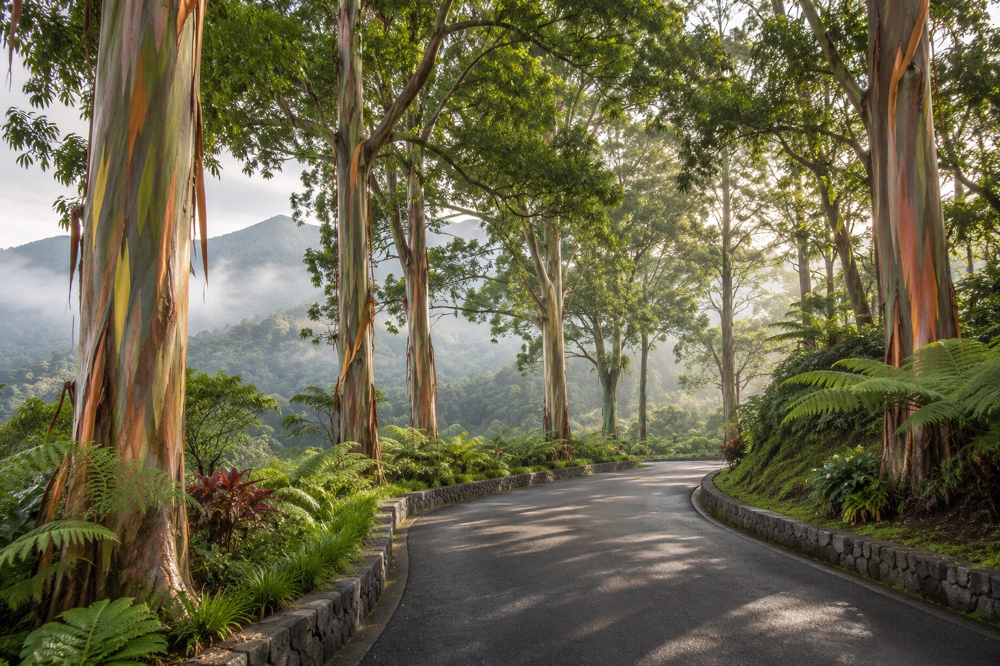
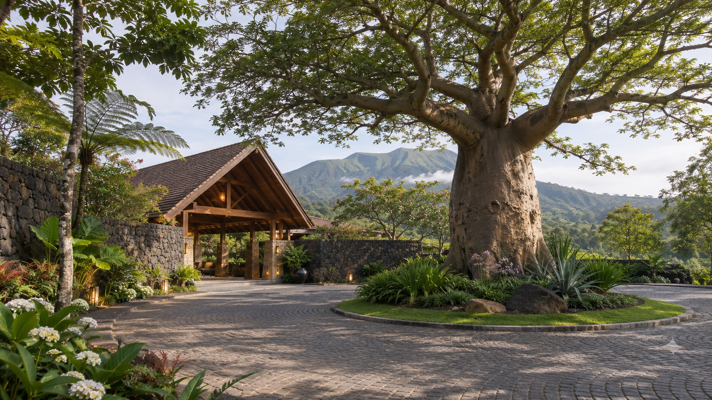
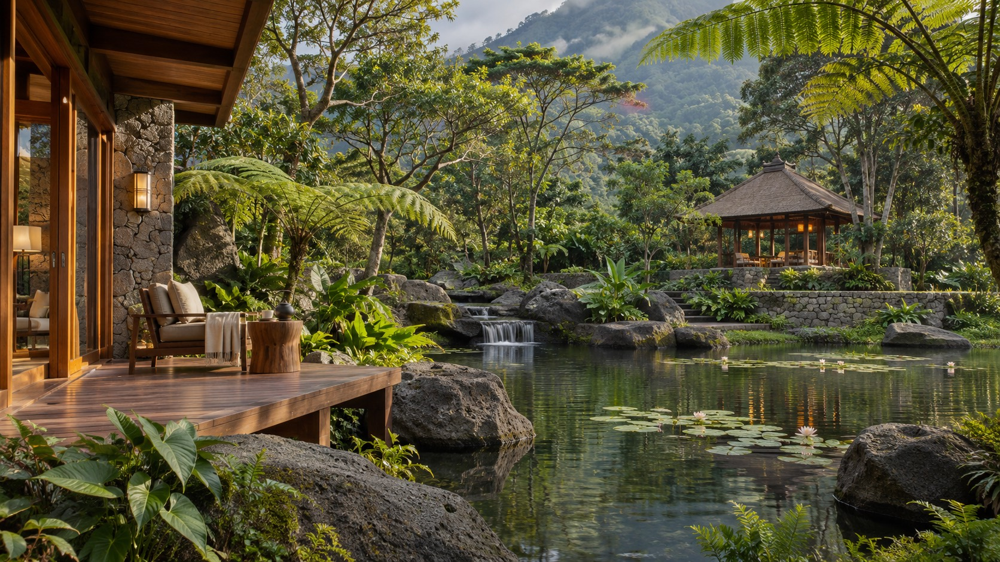

Arvorest Woods
A partially developed country enclave with glamping, a pond, chickens and birds.

A destination taking shape
Trawas, East Java. A place to stay, gather, and live.
The Mount Paradise vision
Mount Paradise brings exceptional stays, private residences and memorable occasions into one connected mountain landscape. Our long-term ambition extends across approximately 40–50 hectares, developed in considered chapters, with the gardens and the spaces between buildings given as much care as the buildings themselves.

The private approach
Rainbow eucalyptus follows the private driveway up from the main road. Layers of green, changing bark and the gradual rise into the hills introduce a quieter world.

A distinctive arrival
African baobab at the entrance gives Mount Paradise a memorable welcome. The landscape already has its own character, which the next chapters will preserve and enrich.

Mountain spring water
Spring water arriving from the surrounding volcanic mountains is part of the identity of the land. Flowing water, natural stone and lush planting inspire the proposed baths, garden walks and everyday life here. The water story begins with its source and its relationship to this landscape.

A community within a destination
Private homes, a grand Main Lodge and country-style Arvorest Woods offer distinct experiences within a shared setting. Hospitality and residences can grow together, supported by recreation, gardens and a continuing social life.
The development journey
A partially developed country enclave with glamping, a pond, chickens and birds.
The Main Lodge, occasions spaces, private homes, sports facilities and Mountain Baths form the wider plan.
The eventual 40–50-hectare ambition makes room for an arboretum, botanical gardens and future neighborhoods, shaped around the terrain.